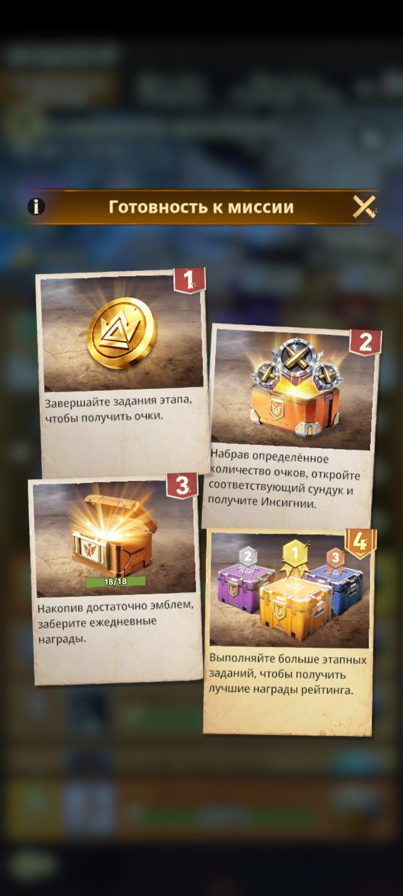
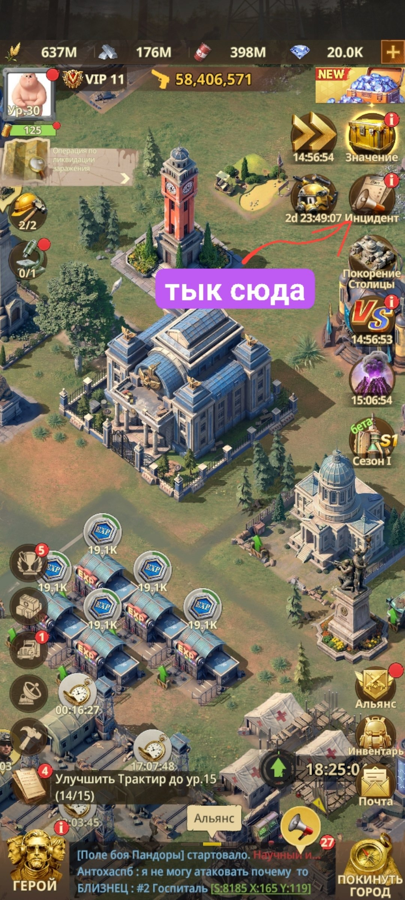
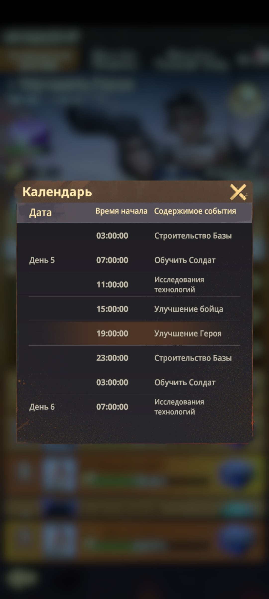
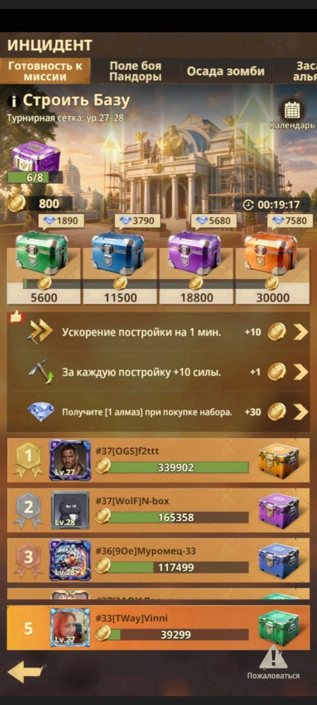
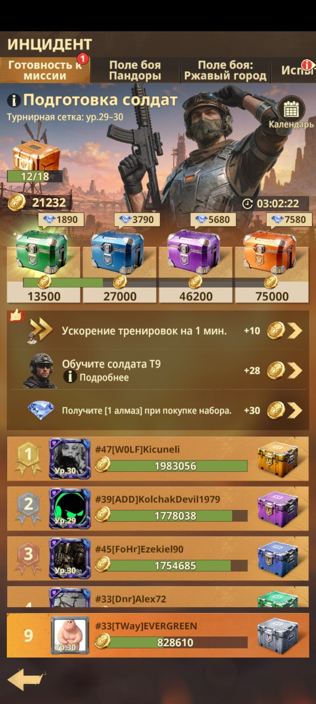
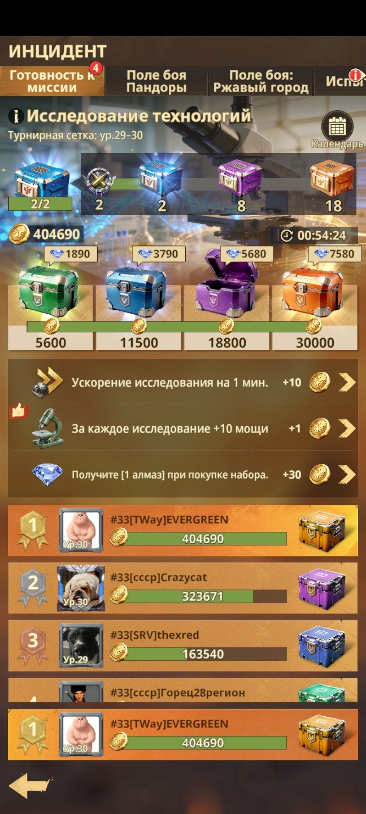
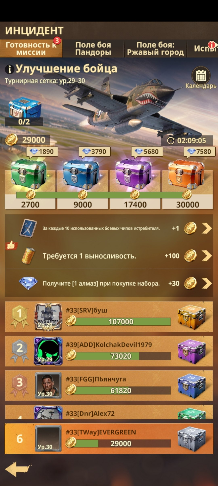
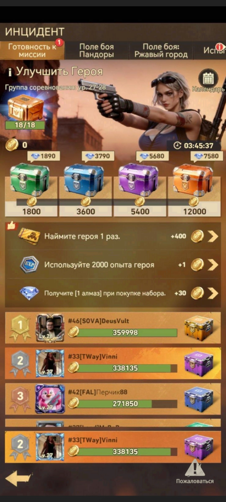

🧭 Готовность к миссии
🧭 ГОТОВНОСТЬ К МИССИИ Ежедневное событие, в котором 12 случайных игроков с разных серверов в течение суток соревнуются между собой. 🏁 Событие состоит из 5 фаз. Выполняйте задания каждой фазы и получайте очки. 🎁 За определённое количество очков открываются сундуки с наградами. 🏆 По итоговой таблице, которая формируется к 05:00 по МСК, участники получают награды по почте в зависимости от занятого места. 🔗 Совмещайте задания с VS, чтобы одновременно зарабатывать очки в двух событиях: 📅 Понедельник - использование Боевых чипов и выносливости. 🏗️ Вторник - завершение построек и ускорение строительства. 🔬 Среда - завершение исследований и их ускорение. 🦸 Четверг - использование очков опыта героев и карт найма героев. 🪖 Пятница - обучение солдат и ускорение тренировок, а также завершение построек и исследований и их ускорение.

🧭 Правила и основные этапы «Готовности к миссии»

🏆 Очки, сундуки и итоговый рейтинг

📍 Где найти событие в игре

📅 Календарь заданий события
🏗️ ФАЗА - СТРОИТЕЛЬСТВО БАЗЫ В этой фазе получаем очки за завершённые стройки и их ускорение. 🏗️ Завершайте подготовленные улучшения зданий, чтобы получать очки события. ⚡ Используйте ускорения строительства во время действия фазы. 📊 Чем больше строительных задач выполнено и ускорено, тем выше итоговый результат и тем быстрее открываются сундуки с наградами. 💡 Заранее подготовьте здания к завершению и накопите ускорения, чтобы получить максимум очков в нужный день.

🏗️ Фаза «Строительство Базы»
🪖 ФАЗА - ОБУЧЕНИЕ СОЛДАТ В этой фазе получаем очки за проведение тренировок солдат и их ускорение. 🪖 Запускайте обучение солдат в период действия фазы. ⚡ Используйте ускорения тренировок, чтобы дополнительно получать очки и быстрее завершать обучение. 📈 Чем больше тренировок проведено и ускорено, тем выше итоговый результат и тем быстрее открываются сундуки с наградами. 💡 Заранее подготовьте очереди обучения и накопите ускорения, чтобы эффективно использовать время фазы.

🪖 Фаза «Обучение солдат» - тренировки, ускорения и награды
🔬 ФАЗА - ИССЛЕДОВАНИЕ ТЕХНОЛОГИЙ В этой фазе получаем очки за завершённые исследования и их ускорение. 🔬 Завершайте подготовленные исследования во время действия фазы. ⚡ Используйте ускорения исследований, чтобы быстрее закрывать задания и получать дополнительные очки. 📈 Чем больше исследований завершено и ускорено, тем выше итоговый результат и тем быстрее открываются сундуки с наградами. 💡 Заранее подготовьте исследования и накопите ускорения, чтобы получить максимум очков за фазу.

🔬 Фаза «Исследование технологий»
⚔️ ФАЗА - УЛУЧШЕНИЕ БОЙЦА В этой фазе получаем очки за использование Боевых чипов для истребителя и трату выносливости. ⚔️ Используйте Боевые чипы для улучшения истребителя во время действия фазы. ❤️ Тратьте выносливость на доступные задания и активности. 📈 Чем больше Боевых чипов и выносливости использовано, тем выше итоговый результат и тем быстрее открываются сундуки с наградами. 💡 Заранее накопите Боевые чипы и выносливость, чтобы получить максимум очков в нужный момент.

⚔️ Фаза «Улучшение бойца» - Боевые чипы и выносливость
🦸 ФАЗА - УЛУЧШЕНИЕ ГЕРОЯ В этой фазе получаем очки за использование карт найма героев и очков опыта героев. 🎫 Используйте карты найма героев во время действия фазы. ⭐ Тратьте очки опыта героев для получения дополнительных очков события. 📈 Чем больше карт найма и опыта использовано, тем выше итоговый результат и тем быстрее открываются сундуки с наградами. 💡 Заранее накопите карты найма и опыт героев, чтобы получить максимум очков в нужный момент.

🦸 Фаза «Улучшение героя»